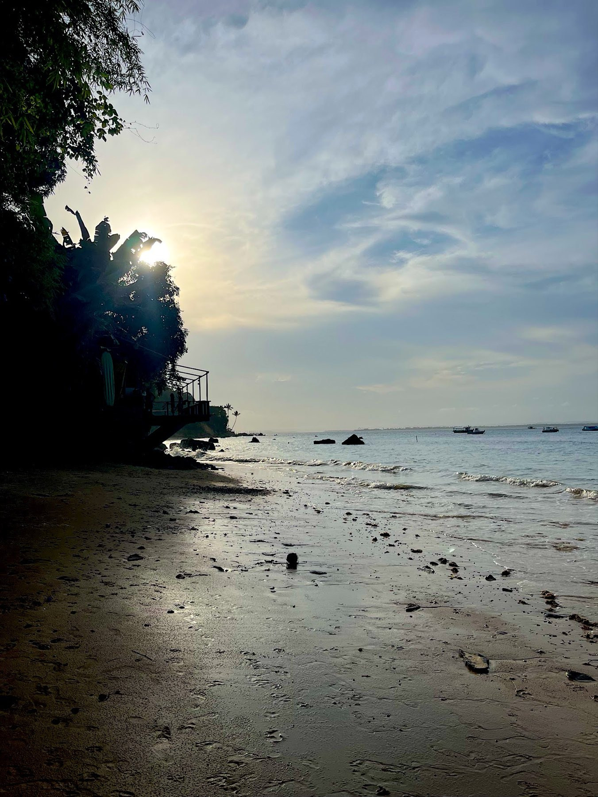
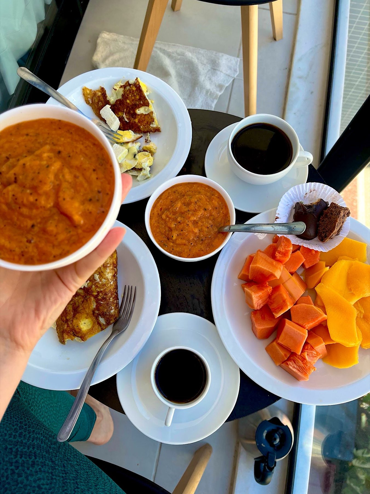
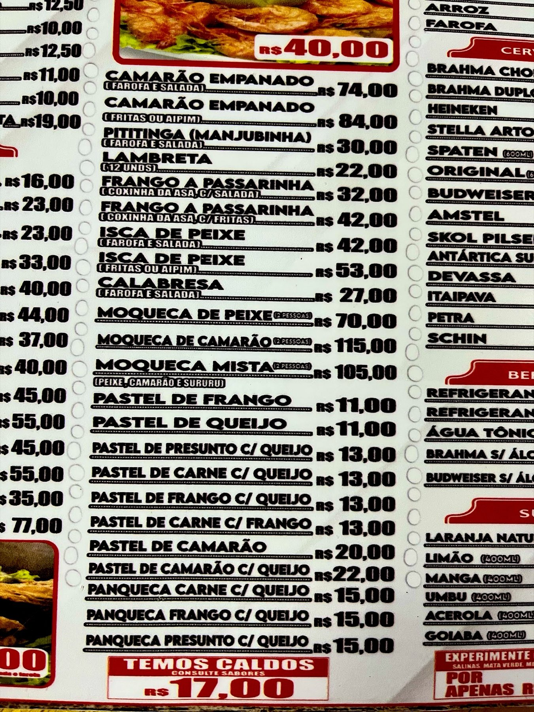
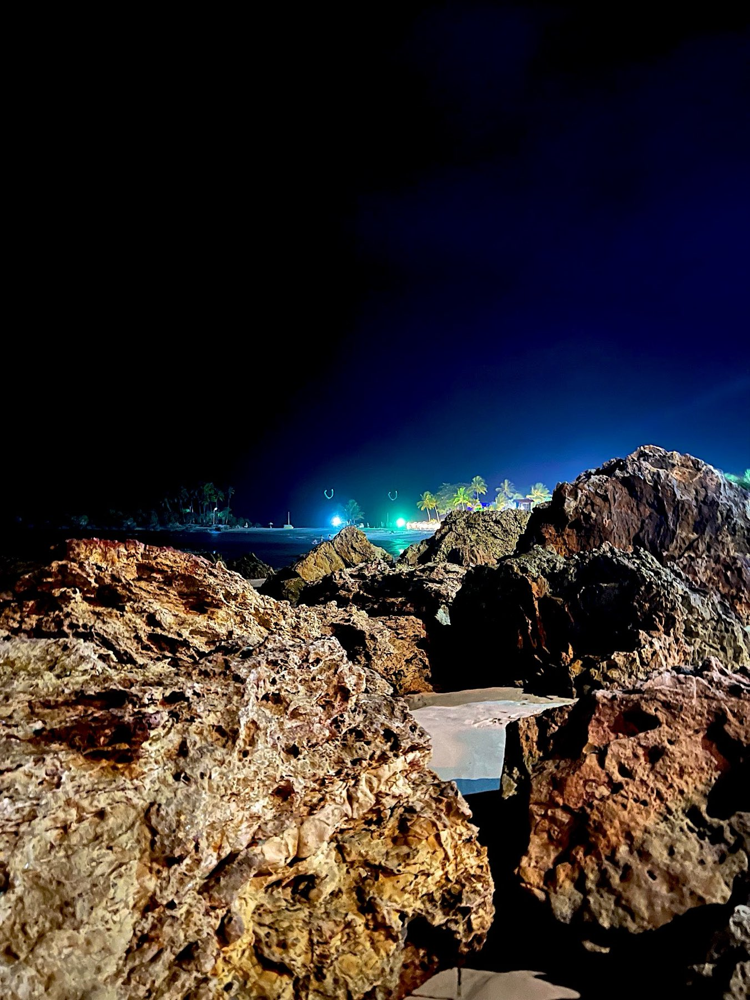
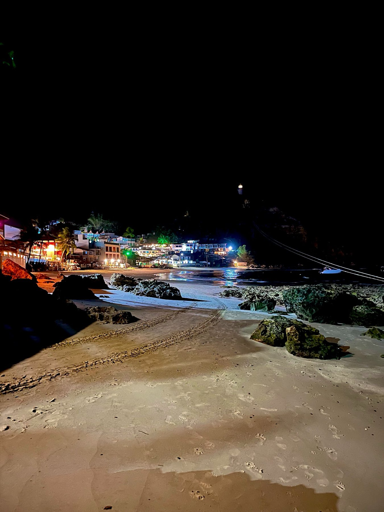
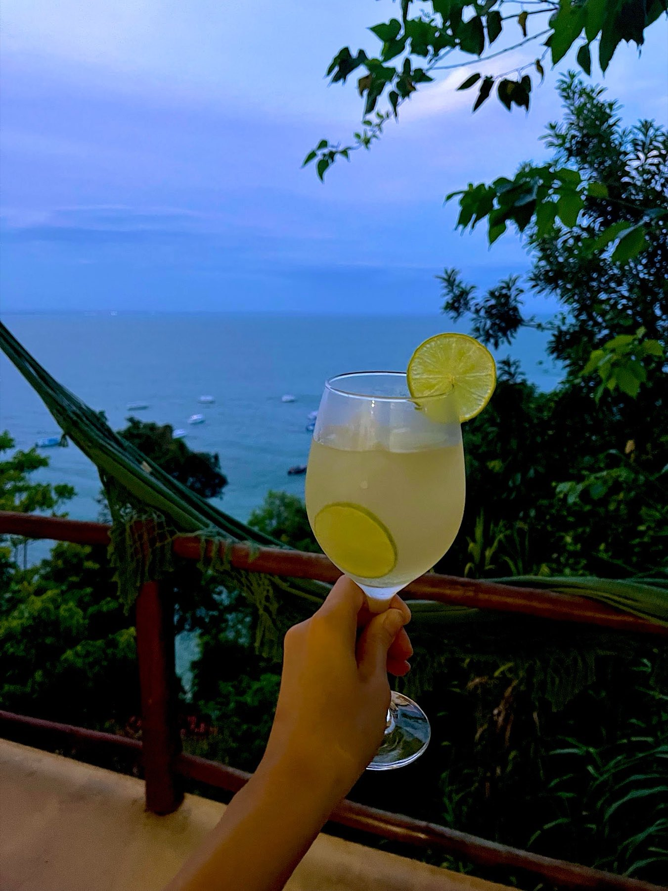
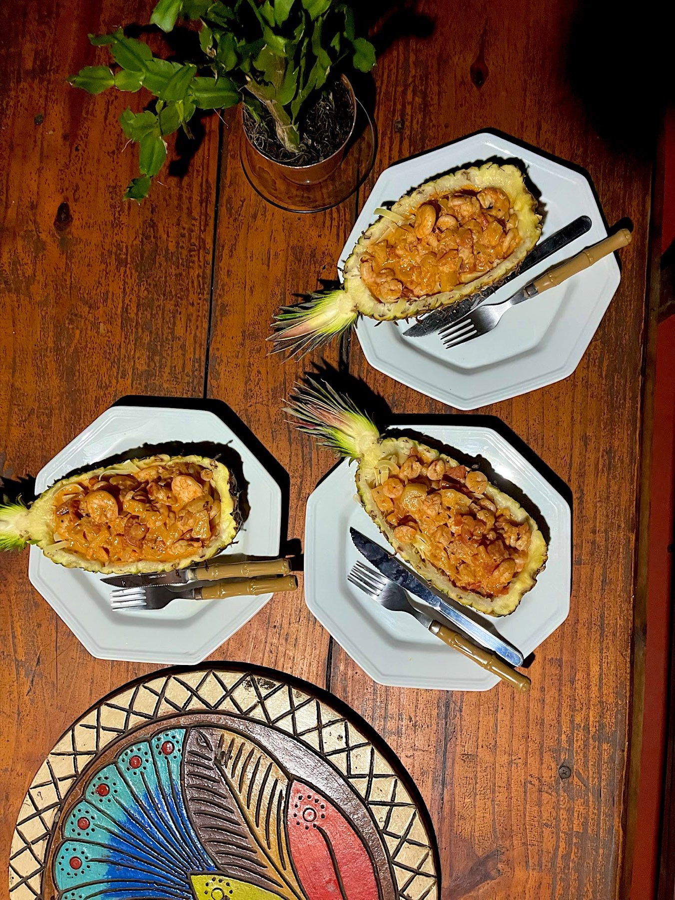
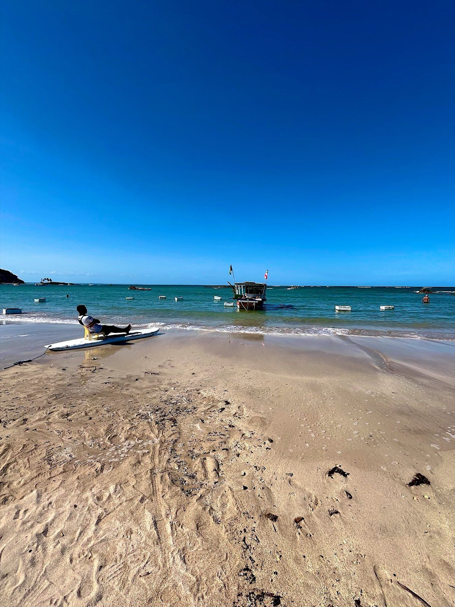
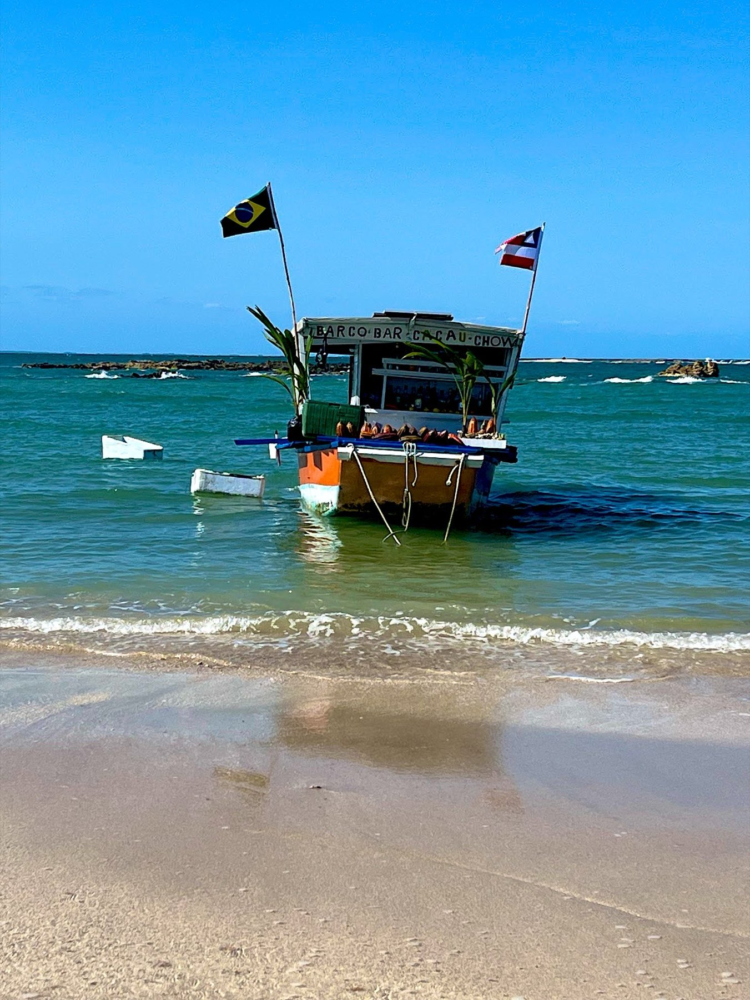

Best areas at a glance
Value & convenience
Village center
Steps from the pier, shops, restaurants and the evening craft market around the main square. Expect hills, stairs and some noise. Mid-range R$250–500 (~US$42–84) · High-end R$800–1,200 (~US$135–200) per night
Surfers & short walks
Primeira Praia
The beach closest to the village, with stronger waves popular with surfers. Quick walk to the pier and the lighthouse trail. Mid-range R$200–400 (~US$34–67) · High-end R$600–900 (~US$100–150) per night
Nightlife & social travelers
Segunda Praia
Beach bars, music and the island’s party scene right outside the door — the liveliest and noisiest area. Mid-range R$300–600 (~US$51–100) · High-end R$800–1,200 (~US$135–200) per night
Couples & families
Terceira Praia
Calm, swimmable water, natural pools at low tide, tour departures, and quiet nights about 5 minutes’ walk from Segunda. Mid-range R$200–450 (~US$34–76) · High-end R$750–1,000 (~US$125–170) per night
Luxury & tranquility
Quarta Praia
The longest, emptiest beach, with the best natural pools and the most spacious, upscale pousadas. Mid-range R$400–700 (~US$67–120) · High-end R$1,000–1,800 (~US$170–305) per night
Total calm
Gamboa
A quiet fishing village across the hill, by the clay cliffs, reached by boat or a walk at low tide. Mid-range R$200–400 (~US$34–67) · High-end R$500–800 (~US$84–135) per night
How Morro is laid out
Morro de São Paulo is a car-free village on the northern tip of Tinharé island. Boats arrive at the pier below the village; from there, a steep lane climbs through the historic gateway to the main square, shops and restaurants. The beaches run south from the village in a numbered line — Primeira, Segunda, Terceira, Quarta and Quinta — connected by sand paths and, at low tide, by walking along the shore. Everything is on foot, so where you sleep decides how much you walk, how quiet your nights are, and how close you are to the water.

Village center: value and convenience
Sleeping in the village puts you a couple of minutes from the pier, the main square (Praça Aureliano Lima), the evening craft market and dozens of restaurants. It’s usually the best value and easiest on arrival day. The trade-off: hills and stairs, no beach outside your door, and some noise from the square and bars. Good for short stays, travelers on a budget and anyone who wants to eat somewhere different every night.

Primeira and Segunda Praia: in the middle of it all
Primeira Praia is the closest beach to the village, with stronger waves that surfers like; it’s quieter than Segunda and a short walk from the pier and the lighthouse trail. Segunda Praia is the island’s social heart — beach bars, music, footvolley by day and luaus by night in high season. Staying here means stepping straight into the action, but also hearing it until late. Restaurants on Segunda tend to be pricier. Best for groups, young travelers and anyone who wants nightlife at the door.

Terceira Praia: the best all-rounder
About five minutes’ walk past Segunda, Terceira has calmer, swimmable water, natural pools at low tide and most of the island-tour departures — yet nights are far quieter. Pousadas range from family-run guesthouses to boutique places with pools right on the sand. This is where we’d send most first-time visitors, couples and families: close enough to walk to everything, calm enough to sleep.

Quarta Praia: quiet, space and luxury
Quarta is the longest and emptiest of the beaches, with the best natural pools on very low tides and the island’s most spacious, upscale pousadas — eco-lodges, sea-view suites with private terraces and hot tubs. The trade-off is distance: dinner in the village means a 15–20 minute walk on sand, partly in the dark, so bring a flashlight or plan to eat locally. Ideal for honeymooners, longer stays and anyone who wants peace.

Gamboa: the quiet side
Across the hill from the village, Gamboa is a small fishing community by the famous clay cliffs, with a calm beach and beautiful sunsets. It’s reached by boat (around R$80–120 (~US$13–20) for a trip, depending on the group) or on foot at low tide. Stay here if you want true quiet and don’t mind being away from the restaurants.

What you get at each price level
- Simple (under R$200 (~US$34)): small rooms, fans or basic air conditioning, breakfast usually included, often in the village or a short walk from the beach.
- Mid-range (around R$200–700 (~US$34–120)): air-conditioned rooms with balconies, generous breakfast buffets, often a pool, and good locations on Terceira or Segunda.
- High-end (R$750–1,800+ (~US$125–305+)): beachfront suites on Quarta or Terceira, infinity pools, hot tubs, spa services, and beautiful design.
Breakfast is included at most pousadas — confirm when booking. Power cuts happen occasionally on the island; better places have a generator. Most listings offer free cancellation until shortly before arrival.

Seasons and prices
Prices peak from mid-December through Carnival and in July, when even simple rooms can cost R$400–600 (~US$67–100) and mid-range pousadas R$600–1,000 (~US$100–170) or more around New Year. In the low season (roughly May to October, outside July), prices often drop 30–50%. For the best mix of weather and value, aim for September to November or March. Book 60–90 days ahead for high season — the best beachfront rooms on Segunda and Terceira go first — and expect minimum stays over New Year and Carnival.

Arriving with luggage
There are no cars. Wheelbarrow and tractor porters wait at the pier and carry bags to your pousada for about R$20–40 (~US$3.5–6.5) depending on distance — agree on the price first. Rolling suitcases are hard work on sand, so travel with soft bags if you can. Pay the R$70 (~US$12) TUPA island fee on arrival (or online in advance). Full details in our Salvador → Morro transport guide.

Money and daily costs
Bring R$300–500 (~US$51–84) in cash from Salvador: ATMs on the island are scarce and unreliable, and porters, beach kiosks and boatmen often take cash only. Pix and cards work at most pousadas and restaurants. Rough 2026 prices:
- Prato feito in the village: R$25–45 (~US$4–7.5)
- Beach-bar meal: R$60–120 (~US$10–20)
- Caipirinha: R$20–35 (~US$3.5–6)
- Long-neck beer on the beach: R$15–25 (~US$2.5–4)
- Coconut water: R$8–15 (~US$1.5–2.5)
Buy water and drinks at village shops, where they cost around half of beach prices.
Nightly prices are for a double room, usually with breakfast, from public listings and local guides, November 2026. US$ amounts are approximate (5.93 reais to the dollar). Always compare prices for your exact dates.

In pictures






Frequently asked questions
What is the best area to stay in Morro de São Paulo?
Terceira Praia is the best all-round area for most visitors, with calm water, restaurants nearby, boat-tour departures and quiet nights. Choose Segunda for nightlife, Quarta for quiet luxury and the village for value.
How much does a pousada cost in Morro de São Paulo?
A good mid-range pousada costs around R$200–700 (~US$34–120) a night for a double room, and high-end pousadas around R$750–1,800 (~US$125–305), in 2026. Prices rise sharply over Christmas, New Year and Carnival.
Is Segunda Praia noisy?
Yes. Segunda is the island’s party beach with bars and luaus late into the night in high season. Light sleepers should stay on Terceira or Quarta.
Are there ATMs in Morro de São Paulo?
ATMs are scarce and unreliable, so bring R$300–500 (~US$51–84) in cash from Salvador. Cards and Pix work at most pousadas and restaurants.
Do I need to book pousadas in advance?
Yes for December–February, Carnival and Brazilian holidays — book 60–90 days ahead, as the best beachfront pousadas sell out.